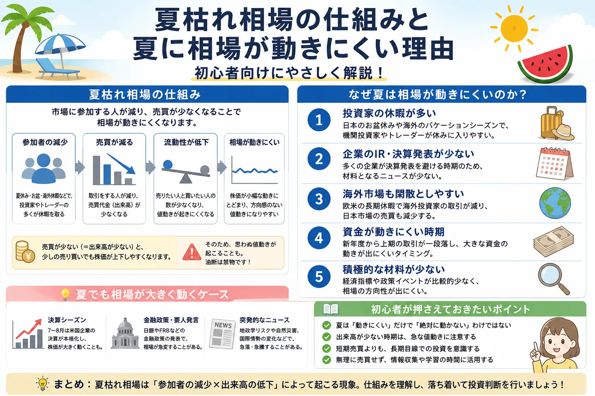

話題・トレンド
夏枯れ相場とは？夏に相場が動きにくいと言われる理由を初心者向けに解説
夏になると、株式市場では「夏枯れ相場」という言葉が使われることがあります。市場参加者が夏季休暇に入り、売買代金や出来高が少なくなりやすいため、相場が動きにくくなると言われています。ただし、夏だから株価が必ず下がるわけではなく、決算発表や金融政策、突発的なニュースによって大きく動くこともあります。
Overview
夏枯れ相場の仕組みを最初に整理

- 夏枯れ相場は、夏に株価が必ず下落するという意味ではありません。
- 市場参加者や売買注文が少なくなり、出来高が減りやすい傾向を表す言葉です。
- 売買が少ないため値動きが小さくなる日もあれば、少ない注文で値が大きく動く日もあります。
- 決算、金融政策、経済指標、地政学リスクなどがあれば、季節に関係なく相場は動きます。
Definition
夏枯れ相場とは？
夏枯れ相場とは、夏の時期に市場参加者や売買注文が減り、株式市場の出来高が少なくなりやすいことから、相場が動きにくいと言われる状態を指します。
夏枯れ相場の意味
夏に売買が少なくなりやすい相場
市場参加者の減少などによって、売買代金や出来高が細り、株価指数や個別株の値動きが小さくなりやすい状態を表します。正式な制度用語ではなく、市場で使われる相場用語です。
いつ頃を指すのか
一般的には7月後半から8月頃
日本ではお盆休みを含む8月が意識されやすく、海外でも夏季休暇の時期と重なります。ただし、始まる日や終わる日が明確に決められているわけではありません。
名前の由来
市場の活気が少なく見えるため
夏の暑さで植物が枯れるように、市場から売買の活気が減ったように見えることから「夏枯れ」と呼ばれます。株価の下落そのものより、売買の少なさを表す言葉です。
重要： 夏枯れ相場は「夏になると必ず株価が下がる」という法則ではありません。相場が横ばいになる場合もあれば、好材料によって上昇する場合、悪材料によって急落する場合もあります。
Why It Happens
なぜ夏は相場が動きにくいの？
夏に相場が動きにくいと言われる主な理由は、市場へ参加する投資家や市場関係者が減り、売買注文が少なくなりやすいからです。
夏休みで市場参加者が減る
国内外の機関投資家、ファンド運用者、金融機関の担当者、個人投資家などが夏季休暇を取るため、市場へ出される注文が減りやすくなります。
売買代金や出来高が減りやすい
市場参加者が少なくなると、売買される株数や金額も減りやすくなります。買い注文と売り注文の勢いが弱くなれば、株価が一定の範囲で動き続けることがあります。
海外市場も夏季休暇に入る
日本株は米国株や欧州株、為替市場など海外市場の影響も受けます。海外でも夏季休暇によって取引が落ち着くと、日本市場の売買にも影響する場合があります。
積極的に売買する材料が少ない日もある
決算発表や重要な経済指標などの材料が少ない日は、投資家が様子見になりやすくなります。売買を急ぐ理由がなければ、株価が狭い範囲で推移することがあります。
大口投資家の注文が少なくなりやすい
株式市場では、年金基金、投資信託、海外ファンドなどの大口投資家が大きな売買を行います。こうした投資家の取引が少なくなると、市場全体の売買代金が減りやすくなります。
夏枯れは日本市場だけの話ではない
夏季休暇による取引減少は海外市場でも意識されます。日本株だけでなく、米国株や欧州株、為替などの取引状況もあわせて確認することが大切です。
Trading Volume
出来高が少ないと相場はどうなる？
出来高とは、一定期間に売買が成立した株数のことです。売買代金は、売買された株式の金額を表します。夏枯れ相場を見るときは、株価だけでなく出来高や売買代金も確認すると、市場の活気を判断しやすくなります。
値動きが小さくなる場合
買いと売りの勢いが弱い
売買注文が少なく、買い手と売り手のどちらにも強い勢いがなければ、株価は一定の範囲を行き来しやすくなります。株価指数も方向感が出にくくなる場合があります。
値動きが大きくなる場合
少ない注文で価格が動くこともある
出来高が少ない状況では、通常より少ない売買注文でも株価が動くことがあります。特に売買が少ない個別株では、急な買い注文や売り注文によって値動きが大きくなる場合があります。
| 比較項目 | 出来高が多い相場 | 出来高が少ない相場 |
|---|---|---|
| 市場参加者 | 多くの投資家が参加している | 参加者や注文が少ない場合がある |
| 売買の成立 | 比較的売買が成立しやすい | 希望価格で売買しにくい場合がある |
| 値動き | 強い売買によって方向感が出ることがある | 動きにくい場合と急に動く場合の両方がある |
| 初心者の確認点 | 上昇・下落に売買の勢いが伴っているかを見る | 少ない売買で価格が動いていないか注意する |
※ スマートフォンでは横にスクロールできます。
出来高が少ないからといって、必ず相場が動かないわけではありません。売買が少ないと市場の流動性が低下し、一つのニュースや大口注文の影響が普段より大きく表れることもあります。
Market Movers
夏でも大きく動くことはある？
夏枯れ相場が意識される時期でも、株価を動かす重要な材料が出れば相場は大きく動きます。「夏だから動かない」と決めつけず、予定されているイベントやニュースを確認することが大切です。
企業の決算発表
売上高や利益、今後の業績予想が市場の予想を上回ったり下回ったりすると、個別株が大きく動きます。大型株の決算は株価指数へ影響することもあります。
FOMC・日銀の金融政策
米国のFOMCや日本銀行の金融政策によって金利見通しが変化すると、株式、為替、債券など幅広い市場が大きく動く場合があります。
重要な経済指標
雇用統計、消費者物価指数、GDPなどの結果が市場予想と大きく異なると、景気や金融政策の見通しが変化し、相場が動きやすくなります。
地政学リスク
国際的な対立、紛争、制裁、貿易規制などが発生すると、投資家がリスクを避けようとして株式を売る場合があります。
災害や突発的なニュース
大規模な自然災害、企業不祥事、政策変更、要人発言など、事前に予測しにくいニュースによって株価が急騰・急落することがあります。
為替や海外株の急変
米国株の急落や為替相場の急変が起きると、日本株も影響を受けます。特に輸出企業や海外売上比率の高い企業は為替の影響を受けやすくなります。
売買が少ない夏の市場では、重要なニュースが出た際に注文が一方向へ偏り、値動きが大きくなる場合があります。夏枯れ相場は「値動きがなく安全な相場」という意味ではありません。
Beginner Checklist
初心者が知っておきたいポイント
夏枯れ相場はニュースや相場解説でよく使われますが、それだけで売買を決めるのは避けたいところです。初心者は次のポイントを確認しましょう。
-
夏枯れは傾向であり、毎年起こるわけではない
市場参加者が減りやすいという傾向はありますが、その年の景気、企業業績、金融政策、海外市場によって相場環境は変わります。
-
株価だけでなく出来高も確認する
株価が上昇・下落しているときに出来高も増えているのかを見ると、市場参加者の勢いや注目度を判断する材料になります。
-
季節だけで投資判断をしない
「夏だから売る」「夏だから買わない」と決めつけず、企業業績、株価水準、金融政策、経済指標などをあわせて確認することが大切です。
-
重要イベントの日程を確認する
保有銘柄の決算発表日、FOMC、日銀金融政策決定会合、雇用統計などの日程を確認すると、急な値動きへ備えやすくなります。
-
流動性の低い銘柄に注意する
普段から出来高が少ない銘柄は、夏季にさらに売買が少なくなり、希望する価格で売買できない場合や、値動きが大きくなる場合があります。
-
長期投資では過度に気にしすぎない
長期投資では、数週間程度の季節要因よりも、企業の成長性、投資商品の分散、積立の継続、資金管理などの方が重要になる場合があります。
- 夏枯れという言葉だけで売買しない
- 日経平均やTOPIXだけでなく出来高も見る
- 決算や金融政策の日程を確認する
- 少ない売買で急変する可能性も考える
- 自分の投資期間と資金管理を優先する
Seasonal Factors
季節要因だけで株価は決まらない
株式市場には夏枯れ相場のほかにも、年末年始や決算期など、季節に関する相場用語があります。しかし、季節要因はあくまで過去に見られた傾向の一つです。
季節要因
夏季休暇、年末年始、決算期、配当や指数の定期見直しなど、時期によって売買が増減する要因です。
企業要因
決算、業績予想、新商品、増配、減配、株式分割、TOBなど、個別企業に関する材料です。
経済・政策要因
金利、物価、景気、為替、金融政策、財政政策、地政学リスクなど、市場全体へ影響する材料です。
実際の株価は、季節要因だけでなく、企業業績や投資家心理、金利、為替、海外市場など多くの要因が組み合わさって決まります。夏枯れ相場という言葉は、市場環境を理解する補助材料として使うことが大切です。
Related Articles
関連する話題・基礎知識
夏の相場を理解するには、株価指数、出来高、金融政策、金利、投資期間などの基礎知識もあわせて確認すると理解が深まります。
FAQ
夏枯れ相場に関するよくある質問
-
夏枯れ相場とは何ですか？
夏枯れ相場とは、夏休みなどで市場参加者が減り、株式市場の売買代金や出来高が少なくなりやすいことから、相場が動きにくいと言われる時期や状態を指す言葉です。正式な制度用語ではなく、市場で使われる相場用語です。 -
夏は株価が必ず下がりますか？
夏だから株価が必ず下がるわけではありません。夏枯れ相場は売買が少なくなりやすい傾向を表した言葉です。企業業績や金融政策、経済指標などによって、夏でも株価が上昇することがあります。 -
なぜ夏は出来高が減るのですか？
国内外の投資家や市場関係者が夏季休暇を取ること、積極的に売買する材料が少ない日があることなどから、市場への参加者や注文が減りやすいと考えられています。 -
夏でも急騰・急落することはありますか？
あります。決算発表、FOMCや日銀の金融政策、重要な経済指標、地政学リスク、災害、企業不祥事などによって、夏でも相場が大きく動くことがあります。売買が少ないため、ニュースの影響が大きく表れる場合もあります。 -
初心者は夏枯れ相場をどう考えればよいですか？
夏枯れ相場だけを売買判断の根拠にせず、出来高、企業業績、経済指標、金融政策、市場全体の流れをあわせて確認することが大切です。長期投資では、一時的な季節要因を過度に気にしすぎる必要はありません。
Summary
まとめ｜夏枯れ相場は季節要因の一つとして確認する
- 夏枯れ相場とは、夏に市場参加者や売買が少なくなり、相場が動きにくいと言われる現象です。
- 国内外の夏季休暇によって、売買代金や出来高が減りやすくなると考えられています。
- 夏枯れ相場は毎年必ず起こるわけではなく、株価が必ず下落するという意味でもありません。
- 決算、FOMC、日銀、経済指標、地政学リスク、災害などによって、夏でも相場が大きく動くことがあります。
- 季節要因だけで判断せず、出来高、企業業績、金融政策、経済ニュースも確認することが大切です。
- 長期投資では、短期間の季節的な値動きを過度に気にしすぎず、分散や資金管理を優先する考え方も重要です。
Next Step
株価指数や金融政策の基礎も確認する
夏枯れ相場を理解するときは、日経平均やTOPIXの動き、出来高、FOMCや日銀の金融政策、企業決算などをあわせて確認すると、市場の状態を判断しやすくなります。
ご利用にあたっての注意事項
本記事は一般的な情報提供と金融教育を目的としており、特定の企業・銘柄・ETF・投資信託・証券会社の推奨や、投資の勧誘を目的としたものではありません。株式や投資信託などの金融商品は元本保証がなく、相場変動、為替変動、信用状況、制度変更などにより損失が生じる場合があります。取引を行う際は、最新の公式情報、契約締結前交付書面、目論見書などを確認し、 ご自身の判断と責任 で行ってください。